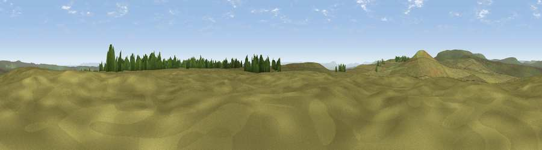

Viewpoint near Lofthouse
#22881 in England · top 51% of its area beats it · near LofthouseThe view, rendered

A 360° render of this exact spot computed from the terrain model, tree cover and land cover — summer colours, afternoon light, calibrated against photographs of famous viewpoints. Real trees, hedges and buildings will differ in detail.
The panorama
Grey silhouette: terrain skyline in each direction (720 bearings, Earth curvature and refraction included). Dashed green: skyline with trees (+15 m) and buildings (+8 m) as obstacles. Blue strip: how far the ground is visible on each bearing.
Where the view opens
Wedge length = distance to the farthest visible ground on that bearing (vegetation-aware). Rings at 10, 25 and 50 km.
What fills the view
96% grassland · 2% woodland · 2% cropland
Angular shares of the visible panorama (visual magnitude), not map area. Landscape diversity 0.10 (0–1 Shannon).
Key numbers
More beautiful places nearby
The staircase of upgrades: each row has a higher view potential than everything closer. Driving times are estimates from straight-line distance, calibrated against real road routing — check an actual route before setting out.
| Place | Direction | Drive | Score |
|---|---|---|---|
| Viewpoint c9388_8101 | SSW · 1 km | ~3 min | 60.1 |
| Viewpoint near Conistone | WSW · 5 km | ~12 min | 62.1 |
| Viewpoint near Conistone | W · 5 km | ~12 min | 63.4 |
| Sweet Hill | WNW · 6 km | ~12 min | 74.7 |
| Viewpoint near Kettlewell | NW · 7 km | ~14 min | 75.6 |
| Viewpoint near Kettlewell | NW · 8 km | ~16 min | 76.6 |
| Viewpoint near Bewerley | SE · 9 km | ~18 min | 76.8 |
| Viewpoint near Buckden | NW · 13 km | ~23 min | 77.3 |
54.12785, -1.91772 · source: screening · position refined by local search. Computed location — check access rights before visiting.